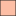

<!doctype html>
<html lang="en">
    <head>
        <meta charset="utf-8">
        <meta http-equiv="X-UA-Compatible" content="IE=edge">
        <meta name="viewport" content="initial-scale=1,user-scalable=no,maximum-scale=1,width=device-width">
        <meta name="mobile-web-app-capable" content="yes">
        <meta name="apple-mobile-web-app-capable" content="yes">
        <link rel="stylesheet" href="css/leaflet.css">
        <link rel="stylesheet" href="css/L.Control.Layers.Tree.css">
        <link rel="stylesheet" href="css/L.Control.Locate.min.css">
        <link rel="stylesheet" href="css/qgis2web.css">
        <link rel="stylesheet" href="css/fontawesome-all.min.css">
        <link rel="stylesheet" href="css/leaflet-search.css">
        <link rel="stylesheet" href="css/leaflet-control-geocoder.Geocoder.css">
        <link rel="stylesheet" href="css/leaflet-measure.css">
        <style>
        html, body, #map {
            width: 100%;
            height: 100%;
            padding: 0;
            margin: 0;
        }
        </style>
        <title>Pi INDEX</title>
    </head>
    <body>
        <div id="map">
        </div>
        <script src="js/qgis2web_expressions.js"></script>
        <script src="js/leaflet.js"></script>
        <script src="js/L.Control.Layers.Tree.min.js"></script>
        <script src="js/L.Control.Locate.min.js"></script>
        <script src="js/leaflet.rotatedMarker.js"></script>
        <script src="js/leaflet.pattern.js"></script>
        <script src="js/leaflet-hash.js"></script>
        <script src="js/Autolinker.min.js"></script>
        <script src="js/rbush.min.js"></script>
        <script src="js/labelgun.min.js"></script>
        <script src="js/labels.js"></script>
        <script src="js/leaflet-control-geocoder.Geocoder.js"></script>
        <script src="js/leaflet-measure.js"></script>
        <script src="js/leaflet-search.js"></script>
        <script src="data/PI_INDEX_1.js"></script>
        <script src="data/KatwaMuni_2.js"></script>
        <script>
        var highlightLayer;
        function highlightFeature(e) {
            highlightLayer = e.target;
            highlightLayer.openPopup();
        }
        var map = L.map('map', {
            zoomControl:false, maxZoom:28, minZoom:1
        }).fitBounds([[23.6269585660614,88.10365175767576],[23.659132187552498,88.15589355936714]]);
        var hash = new L.Hash(map);
        map.attributionControl.setPrefix('<a href="https://github.com/tomchadwin/qgis2web" target="_blank">qgis2web</a> &middot; <a href="https://leafletjs.com" title="A JS library for interactive maps">Leaflet</a> &middot; <a href="https://qgis.org">QGIS</a>');
        var autolinker = new Autolinker({truncate: {length: 30, location: 'smart'}});
        // remove popup's row if "visible-with-data"
        function removeEmptyRowsFromPopupContent(content, feature) {
         var tempDiv = document.createElement('div');
         tempDiv.innerHTML = content;
         var rows = tempDiv.querySelectorAll('tr');
         for (var i = 0; i < rows.length; i++) {
             var td = rows[i].querySelector('td.visible-with-data');
             var key = td ? td.id : '';
             if (td && td.classList.contains('visible-with-data') && feature.properties[key] == null) {
                 rows[i].parentNode.removeChild(rows[i]);
             }
         }
         return tempDiv.innerHTML;
        }
        // add class to format popup if it contains media
		function addClassToPopupIfMedia(content, popup) {
			var tempDiv = document.createElement('div');
			tempDiv.innerHTML = content;
			if (tempDiv.querySelector('td img')) {
				popup._contentNode.classList.add('media');
					// Delay to force the redraw
					setTimeout(function() {
						popup.update();
					}, 10);
			} else {
				popup._contentNode.classList.remove('media');
			}
		}
        var title = new L.Control({'position':'topright'});
        title.onAdd = function (map) {
            this._div = L.DomUtil.create('div', 'info');
            this.update();
            return this._div;
        };
        title.update = function () {
            this._div.innerHTML = '<h2>Pi INDEX</h2>';
        };
        title.addTo(map);
        var abstract = new L.Control({'position':'bottomleft'});
        abstract.onAdd = function (map) {
            this._div = L.DomUtil.create('div',
            'leaflet-control abstract');
            this._div.id = 'abstract'
                this._div.setAttribute("onmouseenter", "abstract.show()");
                this._div.setAttribute("onmouseleave", "abstract.hide()");
                this.hide();
                return this._div;
            };
            abstract.hide = function () {
                this._div.classList.remove("abstractUncollapsed");
                this._div.classList.add("abstract");
                this._div.innerHTML = 'i'
            }
            abstract.show = function () {
                this._div.classList.remove("abstract");
                this._div.classList.add("abstractUncollapsed");
                this._div.innerHTML = 'The Pi Index is a network efficiency measure used in transportation and urban planning to evaluate the compactness of a road network. It compares the total length of roads (L) to the diameter (D) or spatial extent of the area served.<br />High Pi (π) Index values shown in deep red:<br />These areas have a high total road length relative to the area’s size, suggesting a very dense or highly developed road network.<br />➤ Meaning: Strong infrastructure presence, possibly urban or peri-urban zones with many roads in a compact area.<br />Low Pi (π) Index values shown in white:<br />These regions have a low road length relative to their spatial size, indicating a sparse, less developed, or rural network.<br />➤ Meaning: Poor infrastructure, limited road access, or scattered settlements.';
        };
        abstract.addTo(map);
        var zoomControl = L.control.zoom({
            position: 'topleft'
        }).addTo(map);
        L.control.locate({locateOptions: {maxZoom: 19}}).addTo(map);
        var measureControl = new L.Control.Measure({
            position: 'topleft',
            primaryLengthUnit: 'feet',
            secondaryLengthUnit: 'miles',
            primaryAreaUnit: 'sqfeet',
            secondaryAreaUnit: 'sqmiles'
        });
        measureControl.addTo(map);
        document.getElementsByClassName('leaflet-control-measure-toggle')[0].innerHTML = '';
        document.getElementsByClassName('leaflet-control-measure-toggle')[0].className += ' fas fa-ruler';
        var bounds_group = new L.featureGroup([]);
        function setBounds() {
        }
        map.createPane('pane_GoogleRoad_0');
        map.getPane('pane_GoogleRoad_0').style.zIndex = 400;
        var layer_GoogleRoad_0 = L.tileLayer('https://mt1.google.com/vt/lyrs=m&x={x}&y={y}&z={z}', {
            pane: 'pane_GoogleRoad_0',
            opacity: 1.0,
            attribution: '<a href="https://www.google.at/permissions/geoguidelines/attr-guide.html">Map data ©2015 Google</a>',
            minZoom: 1,
            maxZoom: 28,
            minNativeZoom: 0,
            maxNativeZoom: 20
        });
        layer_GoogleRoad_0;
        map.addLayer(layer_GoogleRoad_0);
        function pop_PI_INDEX_1(feature, layer) {
            layer.on({
                mouseout: function(e) {
                    if (typeof layer.closePopup == 'function') {
                        layer.closePopup();
                    } else {
                        layer.eachLayer(function(feature){
                            feature.closePopup()
                        });
                    }
                },
                mouseover: highlightFeature,
            });
            var popupContent = '<table>\
                    <tr>\
                        <td colspan="2">' + (feature.properties['OBJECTID'] !== null ? autolinker.link(String(feature.properties['OBJECTID']).replace(/'/g, '\'').toLocaleString()) : '') + '</td>\
                    </tr>\
                    <tr>\
                        <td colspan="2">' + (feature.properties['WARD_NO'] !== null ? autolinker.link(String(feature.properties['WARD_NO']).replace(/'/g, '\'').toLocaleString()) : '') + '</td>\
                    </tr>\
                    <tr>\
                        <td colspan="2">' + (feature.properties['SUM_length'] !== null ? autolinker.link(String(feature.properties['SUM_length']).replace(/'/g, '\'').toLocaleString()) : '') + '</td>\
                    </tr>\
                    <tr>\
                        <td colspan="2">' + (feature.properties['Shape_Leng'] !== null ? autolinker.link(String(feature.properties['Shape_Leng']).replace(/'/g, '\'').toLocaleString()) : '') + '</td>\
                    </tr>\
                    <tr>\
                        <td colspan="2">' + (feature.properties['PI_INDEX'] !== null ? autolinker.link(String(feature.properties['PI_INDEX']).replace(/'/g, '\'').toLocaleString()) : '') + '</td>\
                    </tr>\
                    <tr>\
                        <td colspan="2">' + (feature.properties['Ward_no_1'] !== null ? autolinker.link(String(feature.properties['Ward_no_1']).replace(/'/g, '\'').toLocaleString()) : '') + '</td>\
                    </tr>\
                    <tr>\
                        <td colspan="2">' + (feature.properties['Max'] !== null ? autolinker.link(String(feature.properties['Max']).replace(/'/g, '\'').toLocaleString()) : '') + '</td>\
                    </tr>\
                    <tr>\
                        <td colspan="2">' + (feature.properties['INTEGRATED'] !== null ? autolinker.link(String(feature.properties['INTEGRATED']).replace(/'/g, '\'').toLocaleString()) : '') + '</td>\
                    </tr>\
                </table>';
            var content = removeEmptyRowsFromPopupContent(popupContent, feature);
			layer.on('popupopen', function(e) {
				addClassToPopupIfMedia(content, e.popup);
			});
			layer.bindPopup(content, { maxHeight: 400 });
        }

        function style_PI_INDEX_1_0() {
            return {
                pane: 'pane_PI_INDEX_1',
                opacity: 1,
                color: 'rgba(190,207,80,1.0)',
                dashArray: '',
                lineCap: 'square',
                lineJoin: 'bevel',
                weight: 1.0,
                fillOpacity: 0,
                interactive: true,
            }
        }
        map.createPane('pane_PI_INDEX_1');
        map.getPane('pane_PI_INDEX_1').style.zIndex = 401;
        map.getPane('pane_PI_INDEX_1').style['mix-blend-mode'] = 'normal';
        var layer_PI_INDEX_1 = new L.geoJson(json_PI_INDEX_1, {
            attribution: '',
            interactive: true,
            dataVar: 'json_PI_INDEX_1',
            layerName: 'layer_PI_INDEX_1',
            pane: 'pane_PI_INDEX_1',
            onEachFeature: pop_PI_INDEX_1,
            style: style_PI_INDEX_1_0,
        });
        bounds_group.addLayer(layer_PI_INDEX_1);
        map.addLayer(layer_PI_INDEX_1);
        function pop_KatwaMuni_2(feature, layer) {
            layer.on({
                mouseout: function(e) {
                    if (typeof layer.closePopup == 'function') {
                        layer.closePopup();
                    } else {
                        layer.eachLayer(function(feature){
                            feature.closePopup()
                        });
                    }
                },
                mouseover: highlightFeature,
            });
            var popupContent = '<table>\
                    <tr>\
                        <th scope="row">Word No.:</th>\
                        <td class="visible-with-data" id="WARD_NO">' + (feature.properties['WARD_NO'] !== null ? autolinker.link(String(feature.properties['WARD_NO']).replace(/'/g, '\'').toLocaleString()) : '') + '</td>\
                    </tr>\
                    <tr>\
                        <th scope="row">Pi Value:</th>\
                        <td class="visible-with-data" id="Pi_norm">' + (feature.properties['Pi_norm'] !== null ? autolinker.link(String(feature.properties['Pi_norm']).replace(/'/g, '\'').toLocaleString()) : '') + '</td>\
                    </tr>\
                </table>';
            var content = removeEmptyRowsFromPopupContent(popupContent, feature);
			layer.on('popupopen', function(e) {
				addClassToPopupIfMedia(content, e.popup);
			});
			layer.bindPopup(content, { maxHeight: 400 });
        }

        function style_KatwaMuni_2_0(feature) {
            if (feature.properties['Pi_norm'] >= 0.885950 && feature.properties['Pi_norm'] <= 1.053382 ) {
                return {
                pane: 'pane_KatwaMuni_2',
                opacity: 1,
                color: 'rgba(35,35,35,1.0)',
                dashArray: '',
                lineCap: 'butt',
                lineJoin: 'miter',
                weight: 1.0, 
                fill: true,
                fillOpacity: 1,
                fillColor: 'rgba(255,245,240,1.0)',
                interactive: true,
            }
            }
            if (feature.properties['Pi_norm'] >= 1.053382 && feature.properties['Pi_norm'] <= 1.182184 ) {
                return {
                pane: 'pane_KatwaMuni_2',
                opacity: 1,
                color: 'rgba(35,35,35,1.0)',
                dashArray: '',
                lineCap: 'butt',
                lineJoin: 'miter',
                weight: 1.0, 
                fill: true,
                fillOpacity: 1,
                fillColor: 'rgba(252,190,165,1.0)',
                interactive: true,
            }
            }
            if (feature.properties['Pi_norm'] >= 1.182184 && feature.properties['Pi_norm'] <= 1.265190 ) {
                return {
                pane: 'pane_KatwaMuni_2',
                opacity: 1,
                color: 'rgba(35,35,35,1.0)',
                dashArray: '',
                lineCap: 'butt',
                lineJoin: 'miter',
                weight: 1.0, 
                fill: true,
                fillOpacity: 1,
                fillColor: 'rgba(251,112,80,1.0)',
                interactive: true,
            }
            }
            if (feature.properties['Pi_norm'] >= 1.265190 && feature.properties['Pi_norm'] <= 1.300762 ) {
                return {
                pane: 'pane_KatwaMuni_2',
                opacity: 1,
                color: 'rgba(35,35,35,1.0)',
                dashArray: '',
                lineCap: 'butt',
                lineJoin: 'miter',
                weight: 1.0, 
                fill: true,
                fillOpacity: 1,
                fillColor: 'rgba(211,32,32,1.0)',
                interactive: true,
            }
            }
            if (feature.properties['Pi_norm'] >= 1.300762 && feature.properties['Pi_norm'] <= 1.453450 ) {
                return {
                pane: 'pane_KatwaMuni_2',
                opacity: 1,
                color: 'rgba(35,35,35,1.0)',
                dashArray: '',
                lineCap: 'butt',
                lineJoin: 'miter',
                weight: 1.0, 
                fill: true,
                fillOpacity: 1,
                fillColor: 'rgba(103,0,13,1.0)',
                interactive: true,
            }
            }
        }
        map.createPane('pane_KatwaMuni_2');
        map.getPane('pane_KatwaMuni_2').style.zIndex = 402;
        map.getPane('pane_KatwaMuni_2').style['mix-blend-mode'] = 'normal';
        var layer_KatwaMuni_2 = new L.geoJson(json_KatwaMuni_2, {
            attribution: '',
            interactive: true,
            dataVar: 'json_KatwaMuni_2',
            layerName: 'layer_KatwaMuni_2',
            pane: 'pane_KatwaMuni_2',
            onEachFeature: pop_KatwaMuni_2,
            style: style_KatwaMuni_2_0,
        });
        bounds_group.addLayer(layer_KatwaMuni_2);
        map.addLayer(layer_KatwaMuni_2);
        var osmGeocoder = new L.Control.Geocoder({
            collapsed: true,
            position: 'topleft',
            text: 'Search',
            title: 'Testing'
        }).addTo(map);
        document.getElementsByClassName('leaflet-control-geocoder-icon')[0]
        .className += ' fa fa-search';
        document.getElementsByClassName('leaflet-control-geocoder-icon')[0]
        .title += 'Search for a place';
        var overlaysTree = [
            {label: 'Katwa Muni<br /><table><tr><td style="text-align: center;"></td><td>0.886 - 1.053</td></tr><tr><td style="text-align: center;"></td><td>1.053 - 1.182</td></tr><tr><td style="text-align: center;"></td><td>1.182 - 1.265</td></tr><tr><td style="text-align: center;"></td><td>1.265 - 1.301</td></tr><tr><td style="text-align: center;"></td><td>1.301 - 1.453</td></tr></table>', layer: layer_KatwaMuni_2},
            {label: ' PI_INDEX', layer: layer_PI_INDEX_1},
            {label: "Google Road", layer: layer_GoogleRoad_0},]
        var lay = L.control.layers.tree(null, overlaysTree,{
            //namedToggle: true,
            //selectorBack: false,
            //closedSymbol: '&#8862; &#x1f5c0;',
            //openedSymbol: '&#8863; &#x1f5c1;',
            //collapseAll: 'Collapse all',
            //expandAll: 'Expand all',
            collapsed: true,
        });
        lay.addTo(map);
        setBounds();
        map.addControl(new L.Control.Search({
            layer: layer_PI_INDEX_1,
            initial: false,
            hideMarkerOnCollapse: true,
            propertyName: 'WARD_NO'}));
        document.getElementsByClassName('search-button')[0].className +=
         ' fa fa-binoculars';
        </script>
    </body>
</html>
